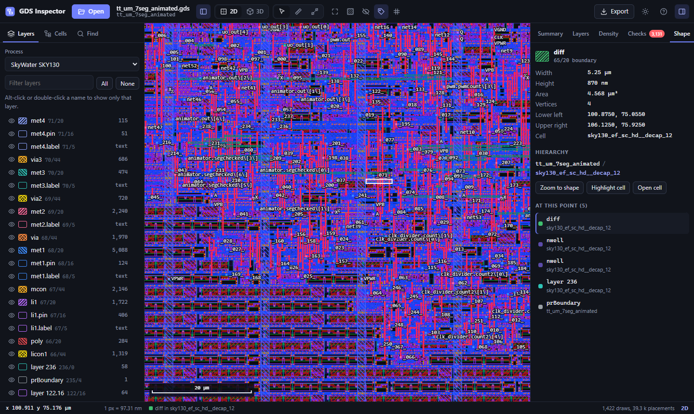

A free GDSII viewer for chip layouts
GDS Inspector lets you explore GDS/GDSII layouts in your browser, VS Code or Cursor. Inspect chip geometry, navigate cell hierarchy and visualize a process stack in 3D. It is open source under the MIT license.

Inspect ASIC and nanofabrication layouts
- 2D layers, labels, hierarchy and shape inspection.
- 3D layer stack with adjustable heights, exploded view and section cuts.
- Snapping ruler, cross-sections, layer statistics and pattern density maps.
- SKY130, GF180MCU and IHP SG13G2 layer presets, plus KLayout .lyp layer colors.
- PNG and SVG exports, JSON reports and CSV layer tables.
Open a GDS file in the browser
Open the viewer and select or drop a layout file. JavaScript and WebGL2 are required. Local files are processed inside the browser without uploading the layout to a server. Remote URL examples require network access to retrieve that file.
GDS viewer extension for VS Code and Cursor
Download gds-inspector-*.vsix from the extension releases. Open your editor's Extensions panel, choose the … menu and Install from VSIX. Then click a GDS file or run GDS Inspector: Open Layout.
The extension ID is OutBlade.gds-inspector. Once published, search for GDS Inspector in VS Code's Microsoft Marketplace or your editor's Open VSX search. Cursor reviews Open VSX packages through its own marketplace proxy, so appearance in Cursor search can differ from registry publication. The VSIX also works with Windsurf and VSCodium.
Supported formats and layer maps
The editor opens .gds, .gds2, .gdsii, .gdsx and .gds.gz files. OASIS files are not supported. Put a KLayout .lyp file beside your layout or configure gdsInspector.layerProperties.
Can this replace sign-off verification?
GDS Inspector is a read-only viewer and inspection tool. Feature-size and rule checks help explore a layout; foundry sign-off DRC and LVS require the appropriate process tools and rule decks.